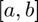
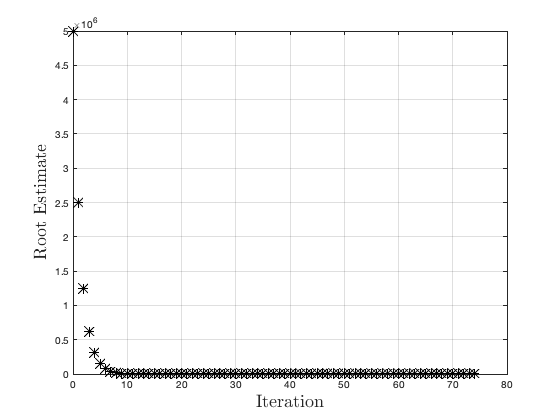
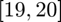

root_bisection
Bisection method for finding the root of a univariate, scalar-valued function.
Back to Root-Finding Toolbox Contents.
Contents
- Syntax
- Description
- Inputs
- Outputs
- Example #1: Root of a simple function using an initial bracketing interval.
- Example #2: Using an initial guess.
- Example #3: Using an initial guess sometime results in failure.
- Example #4: Plot of root estimates at each iteration.
- Example #5: Specifying optional solver parameters.
- Example #6: Intersection of two curves.
- Example #7: Root of a more complicated function.
- gx Function for Example #7
- See also
Syntax
x = root_bisection(f,[a,b]) x = root_bisection(f,x0) x = root_bisection(__,opts) [x,output] = root_bisection(__)
Description
x = root_bisection(f,[a,b]) returns the root of a univariate, scalar-valued function specified by the function handle f, where a and b define the initial guess for the interval  containing the root.
x = root_bisection(f,x0) returns the root of a univariate, scalar-valued function specified by the function handle f, where x0 () is an initial guess of the root.
x = root_bisection(...,opts) can be used with either syntax above, but also allows for the specification of optional solver parameters.
[x,output] = root_bisection(...) also returns a structure storing additional algorithm outputs.
Inputs
| Variable | Symbol | Description | Format | ||||||||||||||||||||||||||||
| f | univariate, scalar-valued function ( |
1×1 function_handle |
|||||||||||||||||||||||||||||
| x0 | initial guess ( |
1×1 double OR 1×2 double |
|||||||||||||||||||||||||||||
| opts | - | (OPTIONAL) solver options
|
1×1 struct |
Outputs
| Variable | Symbol | Description | Format | ||||||||||||||||||||||||||||||||
| x | root of |
1×1 double |
|||||||||||||||||||||||||||||||||
| output | - | algorithm outputs
|
1×1 struct |
Example #1: Root of a simple function using an initial bracketing interval.
Find the root of that is in the interval .
Defining ,
f = @(x) x^2-1;
We want a root in the interval . Therefore, we use the initial guess . Finding this root using the bisection method,
x = root_bisection(f,[0,9999999])
x =
1
Example #2: Using an initial guess.
Repeat Example #1 using an initial guess of instead of an initial interval.
Defining ,
f = @(x) x^2-1;
Finding the root using the bisection method with an initial guess of ,
x = root_bisection(f,4)
x =
1
Example #3: Using an initial guess sometime results in failure.
Repeat Example #1 once more, this time using an initial guess of .
Defining ,
f = @(x) x^2-1;
Finding the root using the bisection method with an initial guess of ,
x = root_bisection(f,500)
Warning: No interval was found with a sign change.
x =
0
Note that we did not obtain a root in the interval . This is because the bracket_sign_change function could not find an interval that contained a sign change, so it kept expanding the interval until a maximum number of expansions was reached. The bisection method then happened to converge on a root of -1. While this is a root of , it is not in the interval that we were originally searching for a root on. This example serves to show that it is preferable to use an initial bracketing interval for the bisection method rather than an initial guess.
Example #4: Plot of root estimates at each iteration.
In Example #1, we found the positive root of using the bisection method. Now, produce a plot of all root estimates obtained by the root_bisection function during its solution procedure.
First, we define in MATLAB like before.
f = @(x) x^2-1;
To obtain the root estimates at all iterations, we simply need to return the output structure. (Note: we use the same initial interval as in Example #1).
[~,output] = root_bisection(f,[0,9999999]);
Plotting the root estimates at each iteration,
figure; plot(output.x_all,'k*','MarkerSize',9,'LineWidth',1.5); grid on; xlabel('Iteration','Interpreter','latex','FontSize',18); ylabel('Root Estimate','Interpreter','latex','FontSize',18);
Example #5: Specifying optional solver parameters.
Repeat Example #1, this time using an absolute bracket tolerance of . Additionally, print the solver progress at each iteration.
Defining ,
f = @(x) x^2-1;
Setting the absolute bracket tolerance,
opts.batol = 1e-5;
Turning solver progress printing on,
opts.print = true;
Solving for the root of using the same initial interval as in Example #1,
x = root_bisection(f,[0,9999999],opts)
Iteration Func-count x f(x)
1 3 2.5000e+06 6.2500e+12
2 4 1.2500e+06 1.5625e+12
3 5 6.2500e+05 3.9062e+11
4 6 3.1250e+05 9.7656e+10
5 7 1.5625e+05 2.4414e+10
6 8 7.8125e+04 6.1035e+09
7 9 3.9062e+04 1.5259e+09
8 10 1.9531e+04 3.8147e+08
9 11 9.7656e+03 9.5367e+07
10 12 4.8828e+03 2.3842e+07
11 13 2.4414e+03 5.9605e+06
12 14 1.2207e+03 1.4901e+06
13 15 6.1035e+02 3.7253e+05
14 16 3.0518e+02 9.3131e+04
15 17 1.5259e+02 2.3282e+04
16 18 7.6294e+01 5.8198e+03
17 19 3.8147e+01 1.4542e+03
18 20 1.9073e+01 3.6280e+02
19 21 9.5367e+00 8.9949e+01
20 22 4.7684e+00 2.1737e+01
21 23 2.3842e+00 4.6843e+00
22 24 1.1921e+00 4.2109e-01
23 25 5.9605e-01 -6.4473e-01
24 26 8.9407e-01 -2.0064e-01
25 27 1.0431e+00 8.8018e-02
26 28 9.6858e-01 -6.1862e-02
27 29 1.0058e+00 1.1691e-02
28 30 9.8720e-01 -2.5433e-02
29 31 9.9652e-01 -6.9577e-03
30 32 1.0012e+00 2.3447e-03
31 33 9.9884e-01 -2.3119e-03
32 34 1.0000e+00 1.5029e-05
33 35 9.9943e-01 -1.1488e-03
34 36 9.9972e-01 -5.6697e-04
35 37 9.9986e-01 -2.7599e-04
36 38 9.9993e-01 -1.3049e-04
37 39 9.9997e-01 -5.7730e-05
38 40 9.9999e-01 -2.1351e-05
39 41 1.0000e+00 -3.1609e-06
40 42 1.0000e+00 5.9340e-06
x =
1.0000
Example #6: Intersection of two curves.
Find the intersection of and that is in the interval .
Defining both functions,
y1 = @(x) x.^2; y2 = @(x) cos(x);
Let's plot both functions to see where their intersection lies.
% defines interval for plotting x = 0:0.01:1.2; % plot figure; hold on; plot(x,y1(x),'LineWidth',1.5); plot(x,y2(x),'LineWidth',1.5); hold off; grid on; xlabel('$x$','Interpreter','latex','FontSize',18); ylabel('$y$','Interpreter','latex','FontSize',18); legend('$y=x^{2}$','$y=\cos{(x)}$','Interpreter','latex','FontSize',14,... 'Location','northwest');
Finding the intersection of the two functions is equivalent to finding the root of their difference. Therefore, we can use the bisection method on with an initial guess of (picked using the plot above) to find the intersection.
x_int = root_bisection(@(x) y2(x)-y1(x),[0.75,0.85])
x_int =
0.8241
Plotting to confirm that this is the true intersection,
figure; hold on; plot(x,y1(x),'LineWidth',1.5); plot(x,y2(x),'LineWidth',1.5); plot(x_int,y1(x_int),'ko','MarkerSize',9,'LineWidth',1.5); hold off; grid on; xlabel('$x$','Interpreter','latex','FontSize',18); ylabel('$y$','Interpreter','latex','FontSize',18); legend('$y=x^{2}$','$y=\cos{(x)}$','intersection','Interpreter','latex',... 'FontSize',14,'Location','northwest');
Example #7: Root of a more complicated function.
Find all the roots of in the interval where is defined using the following calculation procedure:
First, we need to define . We define as the MATLAB function gx at the bottom of this page under "gx Function for Example #7". To define as an anonymous function, we assign it a function handle:
g = @(x) gx(x);
Due to the complexity of , we have no idea where its root(s) is/are. Therefore, let's first plot on (i.e. the interval we want to find the root(s) in).
% interval definition x = 0:0.1:20; % evaluates g(x) over interval g_evaluated = g(x); % plot of g(x) over the interval [-20,20] figure; hold on; plot(x,g_evaluated,'LineWidth',1.5); plot(x,zeros(size(x)),'k--','LineWidth',1.5); hold off; grid on; xlabel('$x$','Interpreter','latex','FontSize',18); ylabel('$g(x)$','Interpreter','latex','FontSize',18);
Visually, we can easily identify the following intervals that contain a root:

Solving for the corresponding roots with the bisection method,
root1 = root_bisection(g,[8,9]); root2 = root_bisection(g,[15,16]); root3 = root_bisection(g,[19,20]);
Printing the roots,
root1 root2 root3
root1 =
8.3149
root2 =
15.6532
root3 =
19.5000
gx Function for Example #7
function g = gx(x) c = 5*x.^2; d = sin(c/500); e = cosh(d); g = 5*e.^2+27*e-40; end
See also
root_brent_dekker | root_iteration | root_itp | root_newton | root_secant